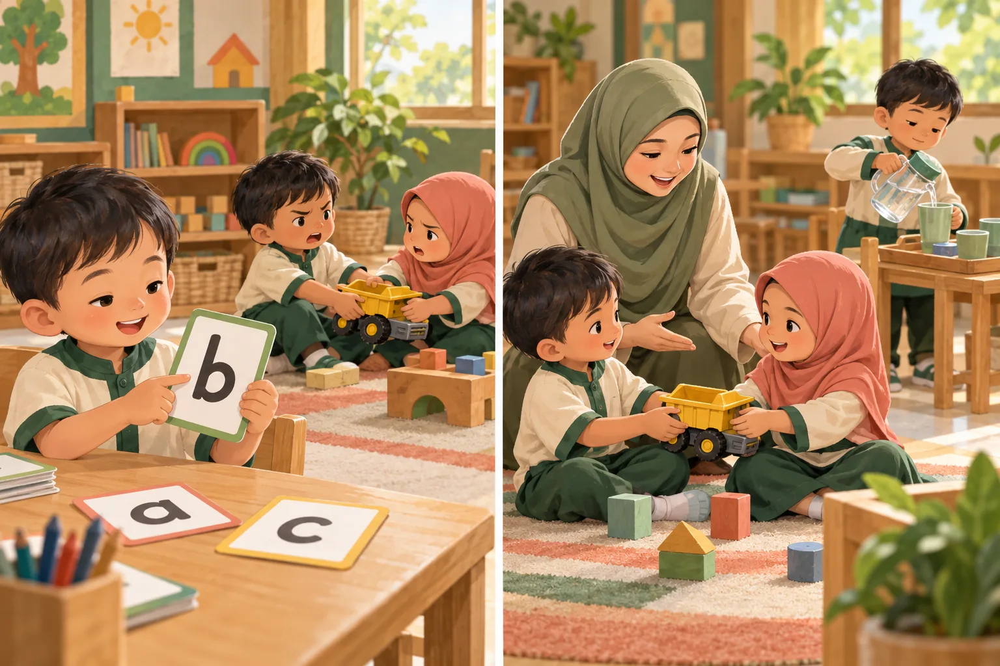
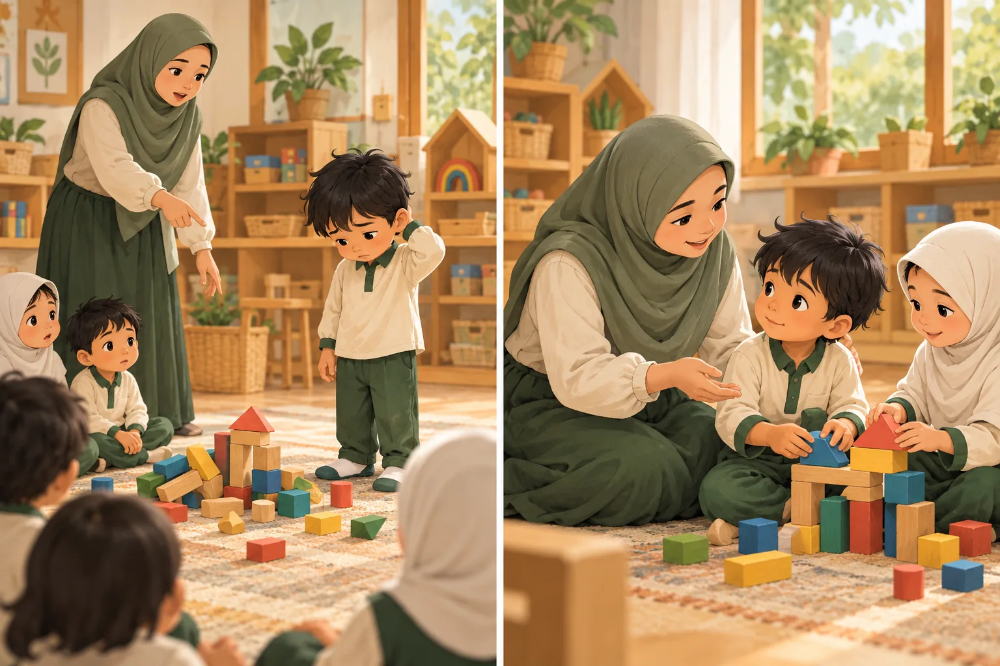
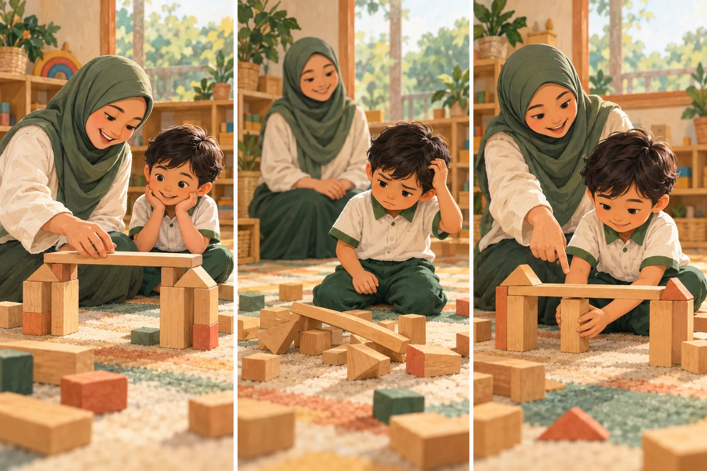
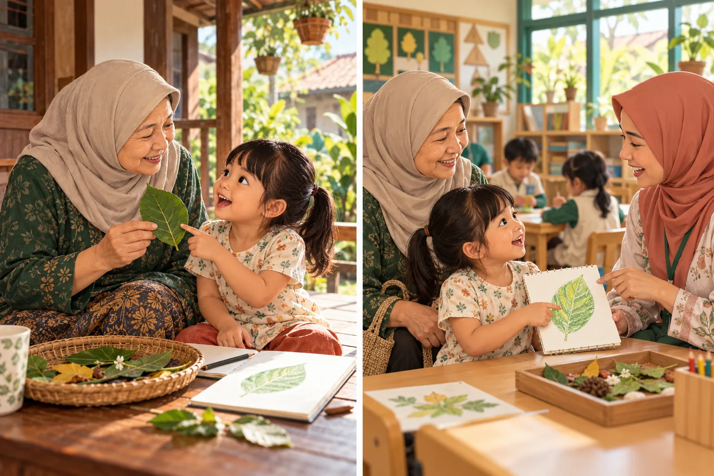
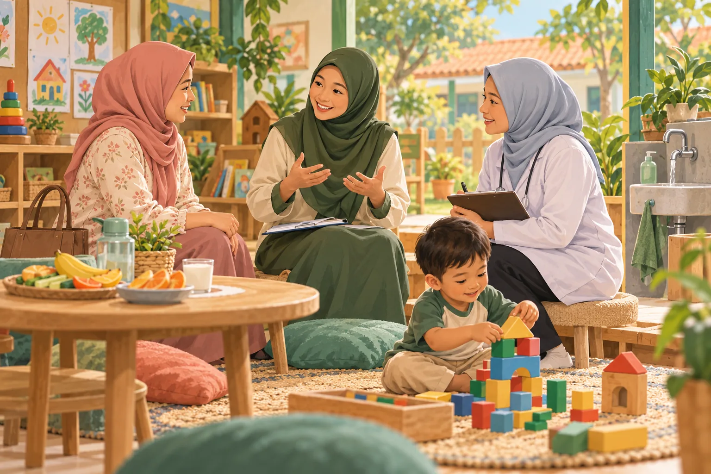
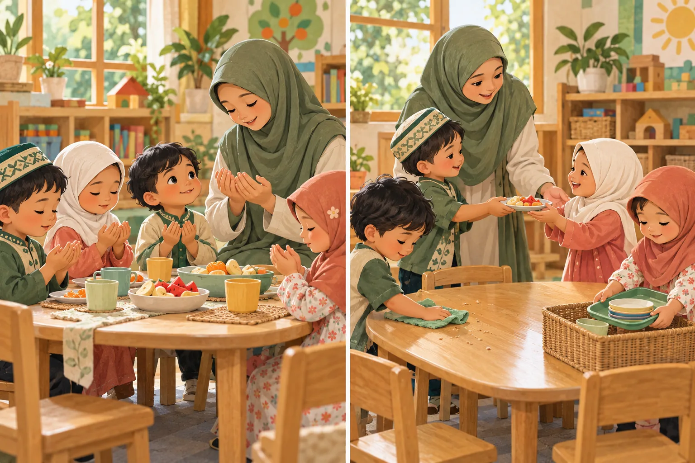
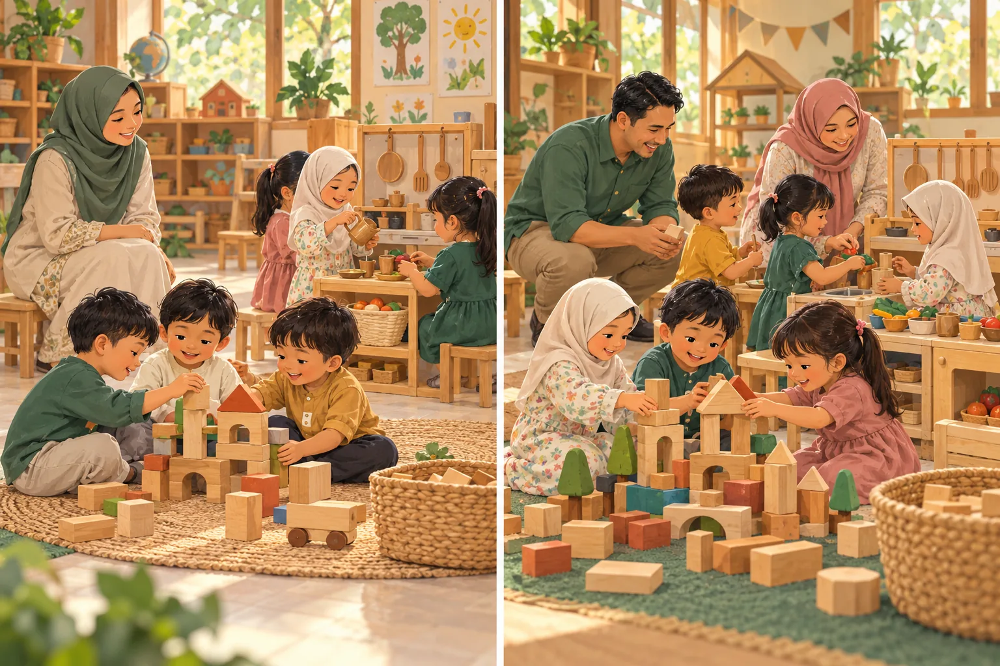

Daftar pertemuan
Peta 16 pertemuan: 14 unit materi, UTS, dan UAS. Pilih unit untuk membuka tujuan, materi, ilustrasi, latihan, serta referensi.
01 · Fondasi ilmu pendidikan

Hakikat pendidikan dan ilmu pendidikan
Membedakan pendidikan, pengajaran, pembelajaran, pengasuhan, dan pelatihan dalam satu kegiatan.
Pelajari materi
Manusia sebagai subjek pendidikan
Menjelaskan mengapa manusia dapat dan perlu dididik dengan tetap mengakui keaktifan anak.
Pelajari materi
Tujuan dan fungsi pendidikan
Menurunkan tujuan pendidikan menjadi pengalaman dan bukti perkembangan.
Pelajari materi
Landasan pendidikan
Membedakan dasar filosofis, psikologis, sosial budaya, religius, dan yuridis dalam satu keputusan.
Pelajari materi
Pemikiran pendidikan dan implikasinya
Membandingkan Dewey, Piaget, Vygotsky, dan Ki Hadjar Dewantara melalui satu persoalan.
Pelajari materi
Komponen dan proses pendidikan
Merancang hubungan antara tujuan, pengalaman, peran pendidik, dan asesmen.
Pelajari materi
Lingkungan dan pusat pendidikan
Menjelaskan hubungan rumah, satuan pendidikan, dan masyarakat melalui trisentra dan ekologi perkembangan.
Pelajari materi02 · Konteks PAUD dan PIAUD

PAUD dalam sistem pendidikan nasional
Membedakan jalur layanan, kedudukan RA, dan pengembangan anak usia dini holistik-integratif.
Pelajari materi
Nilai Islam dalam pendidikan anak usia dini
Menerjemahkan nilai ke dalam teladan, pembiasaan, dialog, dan tindakan anak.
Pelajari materi
Anak sebagai subjek dan relasi pedagogis
Menggunakan observasi, partisipasi, dan penyesuaian akses dalam interaksi kelas.
Pelajari materi
Bermain, pengalaman, dan lingkungan belajar
Merancang bermain terbimbing dengan tujuan, pilihan anak, dan bantuan yang sesuai.
Pelajari materi03 · Kebudayaan dan profesionalisme

Pendidikan, keluarga, dan kebudayaan
Menjelaskan pewarisan budaya, peluang partisipasi, dan cara berdialog dengan keluarga.
Pelajari materi
Tantangan pendidikan dan literasi digital
Menilai klaim manfaat media, kegiatan pendamping, akses, dan pemrosesan data anak.
Pelajari materi
Profesionalisme dan analisis kasus integratif
Menggunakan pengetahuan profesi, pengamatan, dan refleksi untuk mengambil keputusan.
Pelajari materi